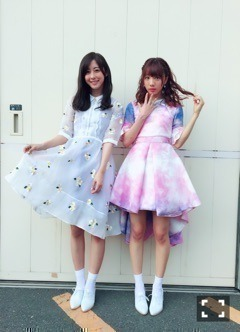
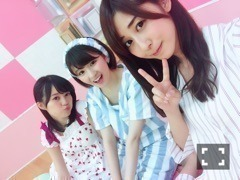

| 2016/06 18 Sat | 斎藤ちはる 衣装にさりげなくハルジオンのお花が咲いてるのが可愛くて好き。実はお花が好きで、道端のお花を見つけたら写真撮っちゃう。もちろんハルジオンも。(´>∀<｀)ゝ |
ちはるーむへようこそ\( ˆoˆ )/
エライザポーズ。
エライザちゃん好き。
同い年なのに可愛すぎる。
写真も世界観も顔も全てツボ。
---------------------------♡
AKBさんの総選挙の結果が発表されましたね！
みなさんお疲れ様ですm(_ _)m
1位と2位のさっしーさんとまゆゆさん、
何空選抜でMステスーパーライブ出た時に
さっしーさんが私のことを指差して
「あの子可愛い！」って言ってくださり、
その時隣にいたまゆゆさんが
「斎藤ちはるちゃんだよ！」って言ってくださったのを今でも覚えています( ;o; )( ;o; )
ものすごく嬉しかった( ;o; )
多分私は一生忘れません。。
---------------------------♡
今日は2ndアルバムの個別握手会でした！
アルバム個握は、いつもシングル曲とアンダー曲、たまにカップリング曲の衣装を着て行なってます！
今回私は
ハルジオンの衣装を着ました！！
まいまいのことを想って。
髪型もさりげなくまいまいがやってた髪型を少しだけ似せました(｡･o･｡)ﾉ
基本ストレートだけど、毛先だけちょっとランダム巻き。
メイクさんがやってくれた...♪
全身ver.

愛未と撮ったよ〜
愛未は「今、話したい誰かがいる」の衣装！
このピンクの衣装もかわいいな
色んな曲の衣装が着れるって
私的に凄い楽しい！！
次は何を着ようかな〜♡
そしてそして
来てくださった方ありがとう(﹡ˆ ˆ﹡)
元気チャージできました(﹡ˆ ˆ﹡)
やっぱり直接聞ける生の声って心に伝わるよね。
来てくれる方がいるから、
応援してくれる方がいるから
頑張ろうって思えるもん。
ブログ最近多くてうれしい！って言われると
こっちまで嬉しくなっちゃう。
でも無理しないでね、大丈夫？って言ってくださった方もいたけど...
ブログ最近ほぼ毎日更新してても、
全然無理してないよ！！
むしろそれが日課みたいになってるから
何書こうかな〜って考えるの楽しいの( ◦˙ ˙◦ )
逆に内容薄くなっちゃうこともあると思うし
たまに更新できない日もあるかもしれないけど
皆さんゆる〜く見守っていてください。
気軽に寄れるちはるーむを目指してるので宜しくね♡
コメントも待ってるからね(｡･o･｡)ﾉ

プク顔いくちゃん
ただの可愛いさゆ
と、私。
人狼面白かった〜って言ってくださる方も多くて人狼フェイスの私は喜びました...
でも顔に出るんだね、素直だね、って言われて
恥ずかしかった。
自分では上手く隠せてると思ってた...
人狼って人柄が出る気がする！
その人間味が好き！
また人狼やりたいな〜
メンバーと今度やろ〜っと。
---------------------------♡
明日は久しぶりに仕事も学校も何もない
ほんとのオフの日！！！
だから家族でのんびり過ごすよ〜♡
ドライブ〜♡
みなさんもゆっくり休んでね！
おやすみ(｡-_-｡)
斎藤ちはる